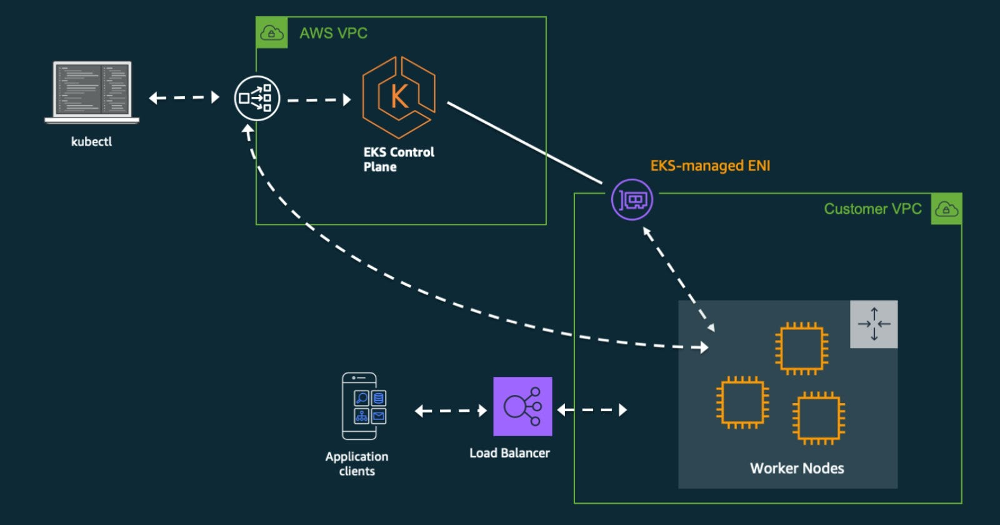

How to create a Kubernetes cluster on AWS EKS
Using self-managed Amazon EC2 nodes (No Fargate)

To create a kubernetes cluster on aws eks, we would be using the aws cli and eksctl that needs to be installed on your local command line as a pre-requisite.
Your aws cli should be configured with the access token and secret of your aws console and your user should have right aws IAM access role.
Now as you have this ready, we will be creating a config file named as cluster.yaml which would be used to setup the cluster as follows -
apiVersion: eksctl.io/v1alpha5
kind: ClusterConfig
metadata:
name: demo-cluster-name
region: "eu-central-1"
version: "1.19"
iam:
withOIDC: false
managedNodeGroups:
- name: demo-cluster-nodegroup-1
iam:
attachPolicyARNs:
- arn:aws:iam::aws:policy/AmazonS3FullAccess
instanceType: t2.small
desiredCapacity: 1
volumeSize: 10
ssh:
allow: true
For this example our cluster name is demo-cluster-name which we are deploying in eu-central-1 region and have defined only one EC2 instance that will be the part of the cluster. Our Ec2 node name is demo-cluster-nodegroup-1 which is of size t2.small with 10GB space as volumeSize.
To create this we will run the following command -
eksctl create cluster -f cluster.yaml
After the executing will run successfully, your cluster could be seen in AWS EKS service in AWS console or you can run -
eksctl get cluster
Your output say EKSCTL CREATED as true for cluster name demo-cluster-name.